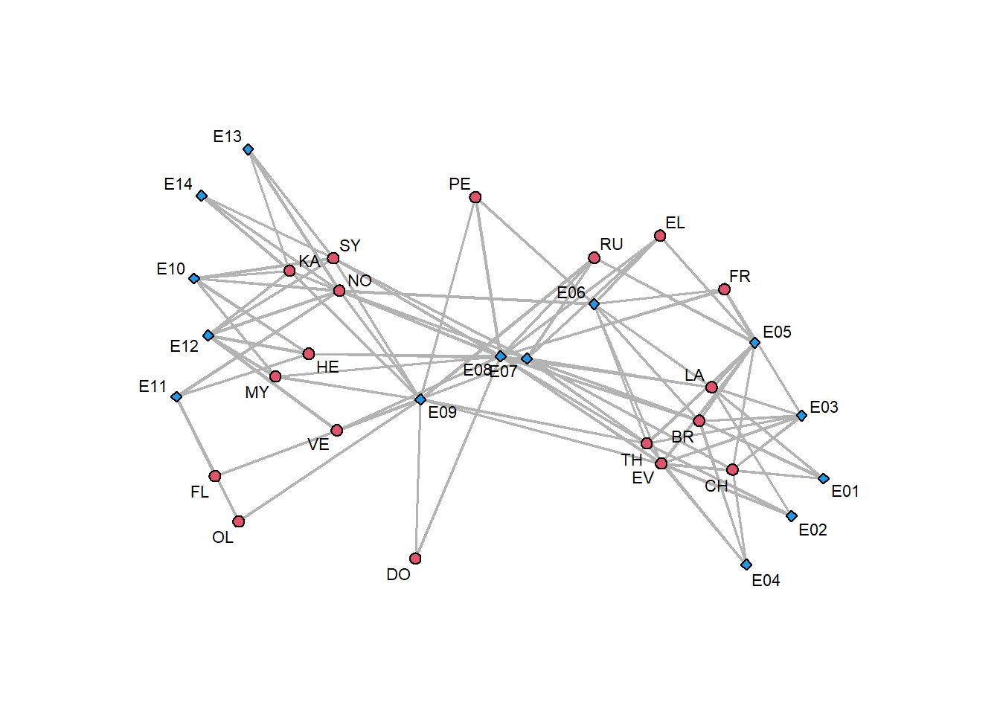

Chapter 10 Two mode networks
10.1 Two-mode data
Whenever we focus on two-mode networks, we put effort on ties, not on actors, where there are two types of actors. As with 1-mode networks, we need to specify the boundary of the network:
- defined by events to which actors participate, missing other events to which those actors attended;
- by actors, to include some events, missing the other actors that attended those events.
library(sna)
DSAm <- as.matrix(read.csv(
"datasets/Davis_SouthernWomen_Attendance.csv",
stringsAsFactors = FALSE, row.names=1))
DSAmS<-DSAm
#Change names in new object
rownames(DSAmS)<-substring(rownames(DSAm),1,2)
#Now draw the network
par(mar = c(0,0,0,0))
gplot(DSAmS,
displaylabels=TRUE,
usearrows=FALSE,
edge.col = "grey70",
gmode="twomode",
vertex.cex = 0.5,
label.cex = 0.7)
10.2 One-mode projections
A one-mode projection is another way of representing two-mode projections by inserting links between nodes if they share a common link toward a node. In order to compute it:
- Get the adjacency matrix;
- Compute the transpose of this matrix;
- Multiply the first matrix with the second one to compute two steps paths from a node to another.
# One-mode projection
DSAmS%*%t(DSAmS) # Matrix multiplication## EV LA TH BR CH FR EL PE RU VE MY KA SY NO HE DO OL FL
## EV 8 6 7 6 3 4 3 3 3 2 2 2 2 2 1 2 1 1
## LA 6 7 6 6 3 4 4 2 3 2 1 1 2 2 2 1 0 0
## TH 7 6 8 6 4 4 4 3 4 3 2 2 3 3 2 2 1 1
## BR 6 6 6 7 4 4 4 2 3 2 1 1 2 2 2 1 0 0
## CH 3 3 4 4 4 2 2 0 2 1 0 0 1 1 1 0 0 0
## FR 4 4 4 4 2 4 3 2 2 1 1 1 1 1 1 1 0 0
## EL 3 4 4 4 2 3 4 2 3 2 1 1 2 2 2 1 0 0
## PE 3 2 3 2 0 2 2 3 2 2 2 2 2 2 1 2 1 1
## RU 3 3 4 3 2 2 3 2 4 3 2 2 3 2 2 2 1 1
## VE 2 2 3 2 1 1 2 2 3 4 3 3 4 3 3 2 1 1
## MY 2 1 2 1 0 1 1 2 2 3 4 4 4 3 3 2 1 1
## KA 2 1 2 1 0 1 1 2 2 3 4 6 6 5 3 2 1 1
## SY 2 2 3 2 1 1 2 2 3 4 4 6 7 6 4 2 1 1
## NO 2 2 3 2 1 1 2 2 2 3 3 5 6 8 4 1 2 2
## HE 1 2 2 2 1 1 2 1 2 3 3 3 4 4 5 1 1 1
## DO 2 1 2 1 0 1 1 2 2 2 2 2 2 1 1 2 1 1
## OL 1 0 1 0 0 0 0 1 1 1 1 1 1 2 1 1 2 2
## FL 1 0 1 0 0 0 0 1 1 1 1 1 1 2 1 1 2 2t(DSAmS)%*%DSAmS # on the other verse## E01 E02 E03 E04 E05 E06 E07 E08 E09 E10 E11 E12 E13 E14
## E01 3 2 3 2 3 3 2 3 1 0 0 0 0 0
## E02 2 3 3 2 3 3 2 3 2 0 0 0 0 0
## E03 3 3 6 4 6 5 4 5 2 0 0 0 0 0
## E04 2 2 4 4 4 3 3 3 2 0 0 0 0 0
## E05 3 3 6 4 8 6 6 7 3 0 0 0 0 0
## E06 3 3 5 3 6 8 5 7 4 1 1 1 1 1
## E07 2 2 4 3 6 5 10 8 5 3 2 4 2 2
## E08 3 3 5 3 7 7 8 14 9 4 1 5 2 2
## E09 1 2 2 2 3 4 5 9 12 4 3 5 3 3
## E10 0 0 0 0 0 1 3 4 4 5 2 5 3 3
## E11 0 0 0 0 0 1 2 1 3 2 4 2 1 1
## E12 0 0 0 0 0 1 4 5 5 5 2 6 3 3
## E13 0 0 0 0 0 1 2 2 3 3 1 3 3 3
## E14 0 0 0 0 0 1 2 2 3 3 1 3 3 3

10.3 Bipartite
It is possible to compute a two-mode network centrality using bipartite one-mode: according to this modality, we put together actors and events.

10.4 Density
To compute the density of a two-mode network, compute the total number of edges and divide it for the maximum number of edges there could be.
# Getting the degree of a two-mode network
mean(DSAmS)## [1] 0.3531746
10.5 Degree Centrality

Figure 10.1: Example of network with scientists and papers
Consider a network with scientists and papers, where \(n_a\) defines the number of scientists and \(n_e\) defines the number of papers. It is possible to compute:
How many publications (\(E\)) does each person (\(A\)) have?
\[ \begin{aligned} A_1 &= 1 \\ A_2 &= A_3 = A_6 = 2 \\ A_4 &= 3 \\ A_5 &= 6 \end{aligned} \]
scientists_papers<-matrix(c(1,0,0,0,0,0,0,0, 1,0,0,1,0,0,0,0, 1,1,0,0,0,0,0,0, 1,1,1,0,0,0,0,0, 0,0,1,1,1,1,1,1, 0,0,0,0,0,0,1,1), 6,8,byrow=TRUE) rownames(scientists_papers)<-c("a1","a2","a3","a4","a5","a6") colnames(scientists_papers)<-c("e1","e2","e3","e4","e5","e6","e7","e8") gplot(scientists_papers, displaylabels=TRUE, usearrows=FALSE, gmode="twomode", edge.col = "grey70", vertex.cex = 1, label.cex = 1)rowSums(scientists_papers) # Scientists Degree## a1 a2 a3 a4 a5 a6 ## 1 2 2 3 6 2colSums(scientists_papers) # Papers Degree## e1 e2 e3 e4 e5 e6 e7 e8 ## 4 2 2 2 1 1 2 2In what proportion of all publications (\(E\)) was a person (\(A\)) involved?
Divide the previous number for the total number of publications \(n_e\) to obtain the proportion of collaboration in all papers.
# Proportion of scientists participation in papers rowSums(scientists_papers)/NCOL(scientists_papers)## a1 a2 a3 a4 a5 a6 ## 0.125 0.250 0.250 0.375 0.750 0.250# Proportion of papers collaboration in scientific community round(colSums(scientists_papers)/NROW(scientists_papers),3)## e1 e2 e3 e4 e5 e6 e7 e8 ## 0.667 0.333 0.333 0.333 0.167 0.167 0.333 0.333What is \(A\)’s total contribution to all publications (\(E\)) taking into account the contribution of co-authors?
When computing the proportion, we consider the number of colleagues that collaborate on a specific paper. If a scientist works on more papers at a time (suppose \(A_2)\), we just sum up that proportion. In a short way, compute the proportion of people that worked in a paper and then compute row sums of those proportions.
# Get column sum = 1 and row sum equal # the total contribution considering coauthors t(t(scientists_papers)/colSums(scientists_papers))## e1 e2 e3 e4 e5 e6 e7 e8 ## a1 0.25 0.0 0.0 0.0 0 0 0.0 0.0 ## a2 0.25 0.0 0.0 0.5 0 0 0.0 0.0 ## a3 0.25 0.5 0.0 0.0 0 0 0.0 0.0 ## a4 0.25 0.5 0.5 0.0 0 0 0.0 0.0 ## a5 0.00 0.0 0.5 0.5 1 1 0.5 0.5 ## a6 0.00 0.0 0.0 0.0 0 0 0.5 0.5# Total contribution to all papers by author rowSums(t(t(scientists_papers)/colSums(scientists_papers)))## a1 a2 a3 a4 a5 a6 ## 0.25 0.75 0.75 1.25 4.00 1.00What is \(A\)’s average contribution to all publications (\(E\)) taking into account the contribution of co-authors?
Take the previous value and divide it for the total number of papers in which he/she collaborated (which was the first column).
round(( rowSums( t( t( scientists_papers)/colSums(scientists_papers))))/ rowSums(scientists_papers),3)## a1 a2 a3 a4 a5 a6 ## 0.250 0.375 0.375 0.417 0.667 0.500

Figure 10.2: Contribution of each author
- In total how many unique co-authors does \(A\) have?
Number of co-authors
Just count the neighbours of the authors, independently from the event \(E\), so just consider the one-way projection of the network. We will get the numbers below, noticing that \(A_2\) and \(A_4\) are the most central nodes in the network.
Proportion of all authors
Divide the number of co-authors by the maximum number obtainable (\(N_a -1 = 6-1 = 5\)).
Number of multiple co-authors
In total how many co-authors does \(A\) have on all papers (irrespective of whether they are the same or not, so counting multiple times same people if authors had multiple collaborations)?
The average number of co-authors on a paper
Divide the number of co-authors (point 1) by the number of papers per author (first column in the original table).
The last column may indicate that \(A_1, A_2, A_3\) collaborate more, while \(A_5\) tends to produce its own ideas.
10.6 Exercise
10.6.1 Exploration

Density: \(31/(n_a\cdot n_e) = 31/130 = 0.24\)
Which person has attended most parties? \(A_2\)
Which person has had the possibility to meet the most different people through parties? \(A_8\)
Which event is attended by the most people? \(E_1, E_4, E_5\)
10.6.2 Projections

10.7 Closeness centrality
The closeness centrality is computed as the sum of closenesses from actors to other actors and from actors to events, considering all edges in between.


The minimum distance in the first case (other) is \(n_e\), while in the second case (own) is \(2n_a-2 = 2(n_a-1)\). In total, by summing them, the minimum distance is \(n_e+2(n_a-1)\).
10.8 Betweenness Centrality
We can focus on:
- how many times an actor is between two events;
- how many times an event is between two actors;
- how many times an actor is between two events/actors, mixing them;
- their sum, which is the total betweenness centrality.
It can be compared with the maximum of each term:
- \(n_e(n_e-1)/2\)
- \((n_a-1)(n_a-2)/2\)
- \((n_a-1)(n_e-1)\)
- \(n_e(n_e-1)/2+(n_a-1)(n_a-2)/2+(n_a-1)(n_e-1)\)
10.9 Structural Holes
It is about being between other people in a structural way such that without that bridge there would be a hole.
In a two-mode network, with a closed triadic structure, how should structural holes be defined?
Structural holes can be defined through closure, which is computed by the ratio of a number of co-authors with multiple counts over unique co-authors.

If we consider the problem of measuring closure/openness in a one-mode projection, we should consider the proportion between the actual edges from an alter to another over the maximum number of edges between a node’s alters.

10.10 Attribute-based measures


Suppose we work with a network of academics that published papers. Some attribute measures could be the total citations of papers and the average citations of papers, starting from the number of times a paper is cited and author gender.
Seems like \(A_6\) is connected only with females (i.e. \(A_5\)), while \(A_4\) and \(A_1\) are the authors that are mostly connected to men.